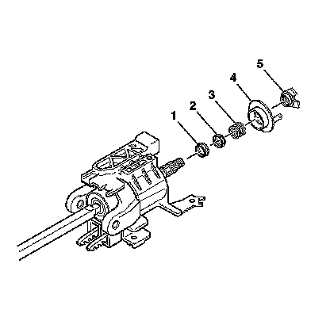
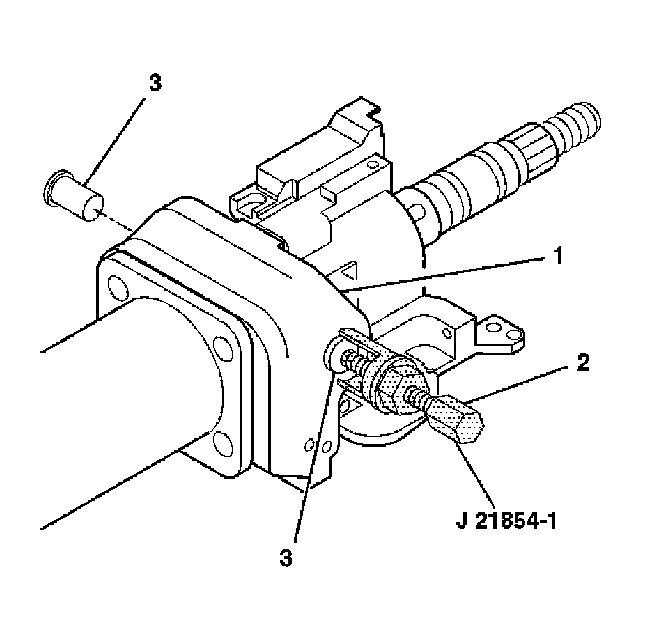
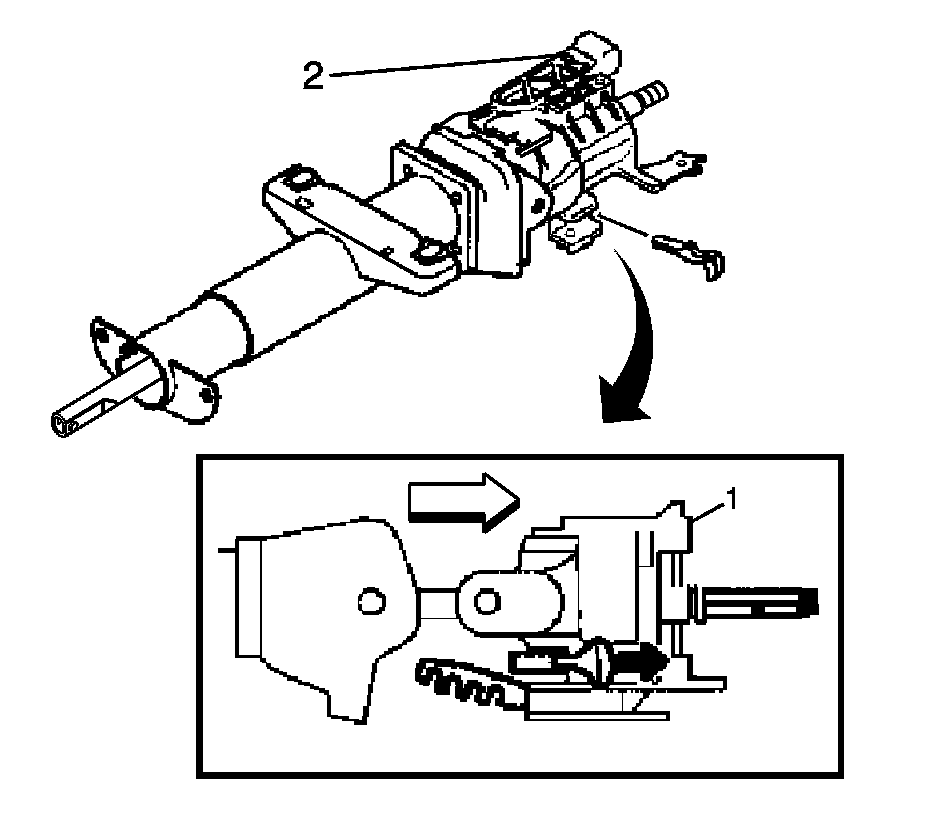
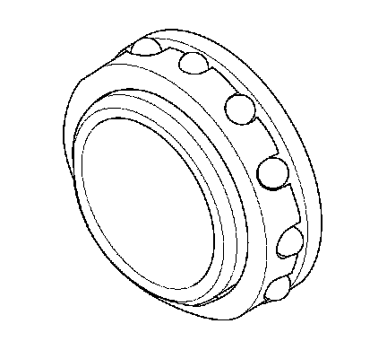
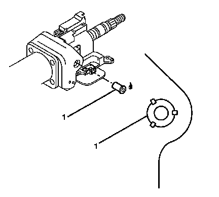

Steering Shaft Upper Bearing Replacement
Steering Shaft Upper Bearing Replacement
Tools Required
^ J 21854-01 Pivot Pin Remover
^ J 23653-SIR Steering Column Lock Plate Compressor
^ J 42137 Cam Orientation Plate Adapter
^ J 42640 Steering Column Anti-Rotation Pin
Removal Procedure
Caution: Refer to SIR Caution.
1. Disable the supplemental inflatable restraint (SIR) system. Refer to SIR Disabling and Enabling.
2. Remove the steering column from the vehicle.
3. Remove the SIR coil.
4. Remove the turn signal multifunction switch.
5. Remove the ignition lock cylinder case.
6. Remove the tilt spring.
7. Remove the linear shift.

8. Using the J 21854-01 and J 42137, remove and discard the bearing retainer.

9. Remove the following parts from the steering column shaft assembly:
^ The cam orientation plate (5)
^ The turn signal cancel cam assembly (4)
^ The upper bearing spring (3)
^ The upper bearing inner race seat (2)
^ The inner race (1)

10. Remove the 2 pivot pins from the steering column tilt head assembly (1) by using J 21854-01.

11. Install the tilt lever into the steering column tilt head assembly (1).
12. Pull back on the tilt lever and at the same time, pull the steering column tilt head assembly (1) down and away from the steering column.
13. Remove the J 42640.
14. Remove the steering column tilt head assembly.
15. Remove the tilt lever.

16. Remove the upper bearing assembly from the steering column tilt head assembly.
Installation Procedure
1. Install the upper bearing assembly to the steering column tilt head assembly.
2. Install the steering column shaft assembly.
3. Maneuver the tilt knob and push the steering column tilt head assembly (1) up towards the steering column in order to lock the steering wheel lock shoes in place.

4. Lubricate the pivot pins (1) with GM P/N 12346293 (Canadian P/N 992723).
5. Firmly seat each pivot pin (1) into the steering column tilt head assembly.
6. Stake the steering column support assembly in 3 locations around each pivot pin.
7. Install the J 42640.
8. Install the following parts onto the steering column shaft assembly:
^ Lubricate the inner race (1) with GM P/N 12345718 (Canadian P/N 10953516).
^ The inner race (1)
^ The upper bearing inner race seat (2)
^ The upper bearing spring (3)
^ Lubricate the turn signal cancel cam assembly (4) with GM P/N 12377900 (Canadian P/N 10953529).
^ The turn signal cancel cam assembly (4) onto the steering assembly
^ The cam orientation plate (5)
9. Install the new bearing retainer onto the steering shaft assembly.
10. Compress the cam orientation plate using J 23653-SIR and J 42137.
11. Firmly seat the bearing retainer into the groove on the steering shaft assembly.
12. Remove the J 23653-SIR.
13. Install the linear shift and the automatic transmission shift lock control only.
14. Install the tilt spring only.
15. Install the turn signal multifunction switch.
16. Install the ignition lock cylinder case.
17. Install the SIR coil.
18. Install the steering column into the vehicle.
19. Enable the SIR system. Refer to SIR Disabling and Enabling.